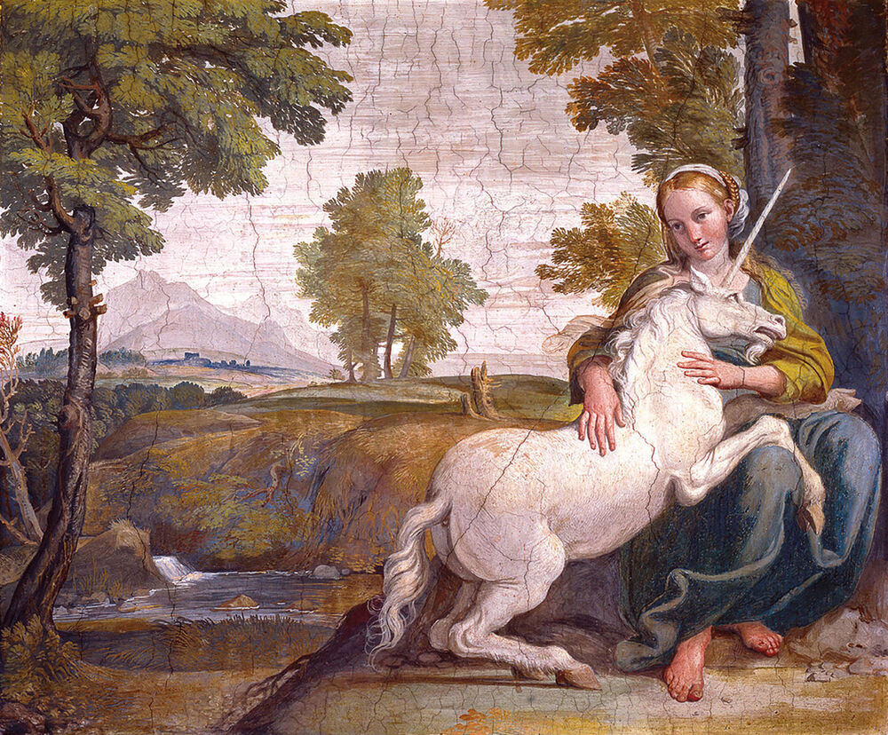

The unicorn in the history of Scotland
In Celtic mythology, the Unicorn was a symbol of purity and innocence, as well as masculinity and power.
Tales of dominance and chivalry associated with the unicorn may be why it was chosen as Scotland's national animal, and yes, it really is the national animal of Scotland.
